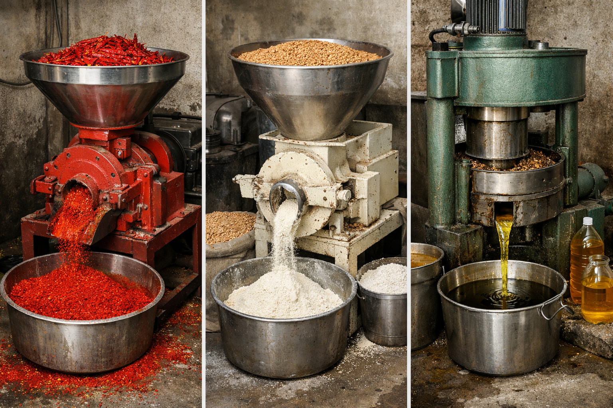

Traditional oil mill
A visual reminder of traditional milling and oil extraction.
A simple workspace for billing, customer credit, products, electricity usage and business reports. Start with daily operations, then use the saved records to understand business trends.
Open dashboard →A simple workspace for everyday mill operations, with traditional mill visuals.
A visual reminder of traditional milling and oil extraction.

Keep daily operations and records organized in one place.